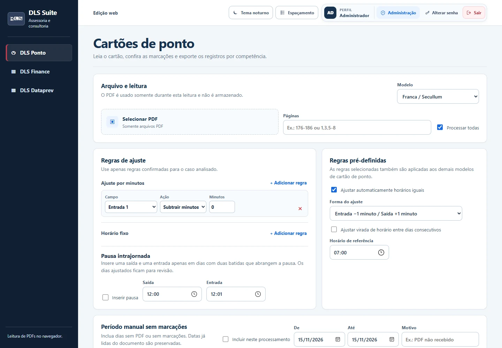
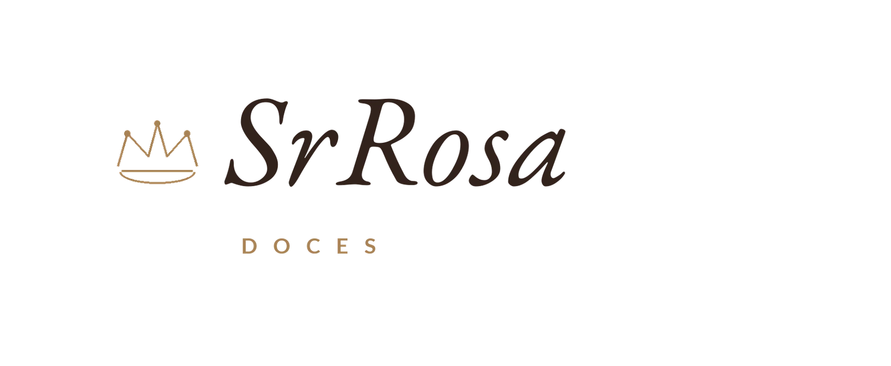

Sites & experiências digitais
Sites responsivos, catálogos e interfaces que apresentam sua marca com organização e personalidade.
PRESENÇA DIGITALENZO ROSA MASSARIOLI
Desenvolvo sites e sistemas e crio conteúdo para redes sociais. Tecnologia e comunicação com clareza, cuidado e propósito.

Funcional por dentro.
Bem pensado por fora.
COMO POSSO AJUDAR
Da rotina do seu negócio à forma como ele aparece na internet.
Sites responsivos, catálogos e interfaces que apresentam sua marca com organização e personalidade.
PRESENÇA DIGITALAutomação, painéis de gestão e organização de documentos para tornar processos mais claros e práticos.
TECNOLOGIA APLICADAArtes para feed e stories, legendas, destaques e calendário editorial com uma identidade consistente.
CRIAÇÃO & PLANEJAMENTOTRABALHOS SELECIONADOS
Uma seleção dos meus projetos, apresentados em imagens e detalhes do desenvolvimento.
SISTEMA & AUTOMAÇÃO
Documentos complexos.
Informações organizadas.
Plataforma modular para extrair, conferir e organizar dados de cartões de ponto, fichas financeiras e históricos salariais.
Interfaces local e web, regras por modelo de documento, rastreabilidade da origem e revisão humana de divergências. O projeto utiliza SQLAlchemy, PostgreSQL/SQLite e ferramentas de leitura de PDF e exportação de planilhas.
As telas apresentadas usam dados fictícios ou formulários sem documentos.
GESTÃO & EXPERIÊNCIA DO USUÁRIO
A rotina de um negócio,
em um só lugar.
Sistema de gestão para confeitaria artesanal, pensado para conectar atendimento, produção e controle financeiro.
O sistema reúne também catálogo, compras, clientes, equipe e permissões, marketing e etiquetas. Foi desenvolvido com Drizzle e testes automatizados para os fluxos de gestão.
As capturas mostram a interface real em ambiente de demonstração, sem dados de clientes.
IDENTIDADE & CATÁLOGO
Uma marca com a mesma
coerência em cada detalhe.
Organização visual da marca, logotipo, cardápio digital e materiais de comunicação. Uma linguagem que conecta o produto à sua apresentação.

POR TRÁS DOS PROJETOS
Enzo Rosa Massarioli
Gosto de transformar processos e ideias em soluções que façam sentido para quem vai usar.
Meu trabalho une desenvolvimento, organização e comunicação visual. Da leitura de documentos a um painel de gestão ou uma sequência de postagens, busco clareza em cada etapa.
Aprendizado contínuo, testes e documentação fazem parte do processo. O cuidado com os detalhes aparece tanto na estrutura quanto na experiência final.
VAMOS CONVERSAR
Precisa de um site, um sistema ou conteúdo para sua marca?
Me conte o que você tem em mente.